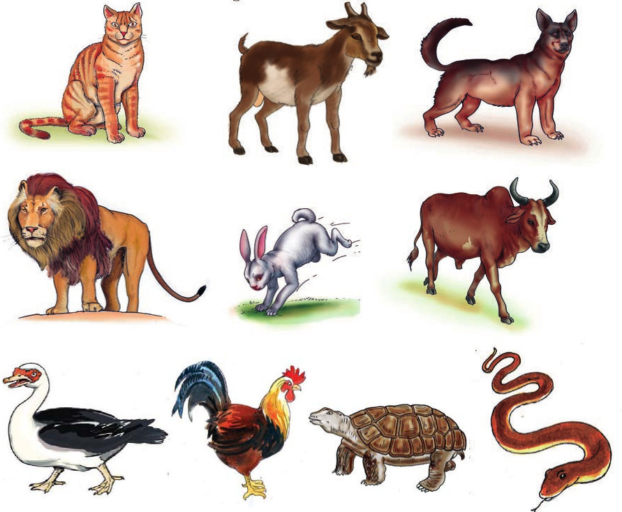

Tucheze mchezo
Nyama nyama nyama
Chunguza picha zifuatazo kisha jibu maswali ya zoezi linalofuata.

Zoezi la 2
1. Ni wanyama gani wanaoliwa na binadamu?
2. Ni wanyama gani wasioliwa na binadamu?
Tucheze mchezo
Chunguza picha zifuatazo kisha jibu maswali ya zoezi linalofuata.

1. Ni wanyama gani wanaoliwa na binadamu?
2. Ni wanyama gani wasioliwa na binadamu?